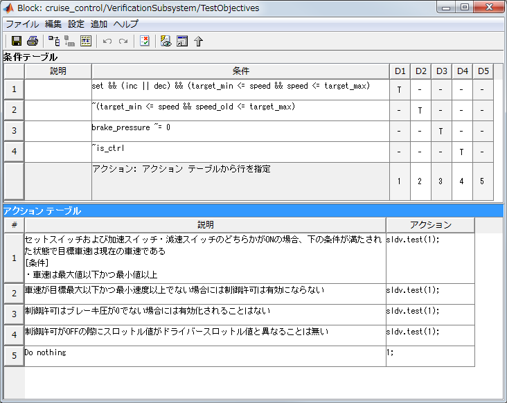

要件ベーステスト用TruthTableブロック作成
- Simulink Verification and Validation™ 必要
- Simulink Design Verifier™ 必要
- Simulink® および Stateflow(R)必要
Contents
機能詳細
この機能は、Simulink Design Verifierの機能を利用して、 要件ベーステストを実施するための要件モデルを作成します。
(1) Excelに、検査式とその組み合わせを記述し、その記述範囲を選択する。
(2) 「要件ベーステスト」をクリックする
(3)下記のようなモデルが作成される
上図の(A)部分：
上図の(A)部分は、下図のようなTruthTableブロックを生成します。 この(A)部分は、検査式に記述された「P -> Q」で表されるPならばQの条件に対して、 Pを成立させるテスト入力を、Simulink Design Verifierの機能を用いて自動生成させる ための部分です。「アクションテーブル」内「アクション」列にある「sldv.test(1)」の 記述により、「条件テーブル」内の「条件」の各列を成立させます。

上図の(B)部分：
上図の(B)部分は、下図のようなTruthTableブロックを生成します。 この(B)部分は、検査式が成立することを確認するためのブロックです。 検査式が成立しない場合には、各行番号がTruthTableブロックから出力され、 TruthTableの後段に接続される「==0」およびAssertionブロックにより 違反が検出されます。
作成された"VerificationSubsystem"ブロックをモデル中に配置し、 Excel上に記述した期待される入力値とその期待出力を 該当する信号線に結線します。
本機能の利用方法
本機能には2つの利用方法があります。
- テスト生成+シミュレーション Simulink Design Verifierの自動テスト生成機能を実行すると 検査式に記述した「P -> Q」で表されるPならばQの条件に対して、 Pを成立させるテストベクタが生成されます(上図(A)部分)。 生成されたテストハーネスに対してシミュレーションを実施することで、 期待出力と一致することを、上図(B)部分において確認することができます。 もし違反が発生する場合には、Assertionブロックにおいて検知されます。
- プロパティ検証を利用 Simulink Design Verifierのプロパティ検証を この機能から提供されるブロックを含むモデルに対して実行すると、 検査式にに対して形式検証による証明が行われます。 各検査式にに対して違反する入力パターンが存在するのであれば、 その証拠となる反例入力を含むテストハーネスを生成します。
検査式記述ルール
- 第1列「説明」： モデル中のコメントとして利用されます。シミュレーションには直接影響を与えません。
- 第2列「条件式」： 第1列に対応する条件式を記述します。算術演算子、論理演算子、比較演算子を含むMATLAB式で記述します。なお、このツール独自の機能として、implies 「->」 が利用可能です。 条件式として 「A -> B 」と記述した場合、それは自動的に ~A || B に変換されます。(記述の簡素化のため)
注意事項
- 条件式欄では時相論理を直接扱うことができません。その場合には、時間に関わる部分をユーザが作成する必要があります。（例えば、up_sw_old 変数を条件式中で使い、 Unit delay ブロックを用いて1サンプル過去のup_sw値を up_sw_old ポートに接続するなど。）
デモ実行例
- cmtdtool\demoフォルダ内 cmtdtool_sampledata.xls を開く
- 「要件ベーステスト」タブ内 B2:C6を選択する
- cmtdtool 上で「要件ベーステスト」ボタンをクリックする
- 新規モデル上に「VerificationSubsystem」ブロックが作成されていることを確認する
- コマンドウィンドウから以下を実行することでGUIと同様な操作が実行可能であることを確認する
xls2RequirementBaseTestTruthTable('cmtdtool_sampledata.xls','要件ベーステスト','B2:C6');